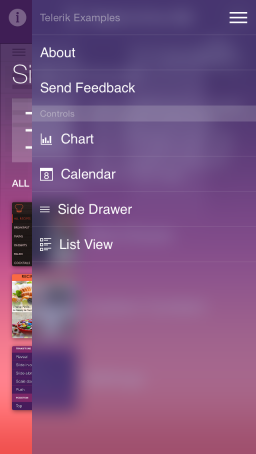

TKSideDrawer Class Reference
| Inherits from | TKView : UIView |
| Declared in | TKSideDrawer.h |
Overview
TKSideDrawer extends the popular slide-out menu design pattern which is mainly associated with navigational purposes. The control allows for embedding any content inside the sliding view from text and icons to sliders and filters. The control is revealed when the end-user swipes a finger from the left/right/top/bottom edge of the screen or when the user touches the menu icon in the navigation bar.

Tasks
-
contentproperty -
themeproperty -
allowScrollproperty -
allowEdgeSwipeproperty -
edgeSwipeTresholdproperty -
allowGesturesproperty -
titleproperty -
positionproperty -
widthproperty -
transitionManagerproperty -
transitionproperty -
transitionDurationproperty -
headerViewproperty -
footerViewproperty -
delegateproperty -
styleproperty -
hostviewproperty -
isVisibleproperty -
+ findSideDrawerForViewController: -
– show -
– showWithTransition: -
– dismiss -
– addSection: -
– addSectionWithTitle: -
– addSectionWithTitle:image: -
– removeSection: -
– removeAllSections -
– insertSection:atIndex: -
– sections
Properties
allowEdgeSwipe
Determines if sidebar should be shown with edge swipe.
@property (nonatomic) BOOL allowEdgeSwipeDeclared In
TKSideDrawer.hallowGestures
Determines if TKSideDrawer should respond to gestures.
@property (nonatomic) BOOL allowGesturesDeclared In
TKSideDrawer.hallowScroll
Determines if scrolling is enabled.
@property (nonatomic) BOOL allowScrollDeclared In
TKSideDrawer.hcontent
TKSideDrawer’s content. If not set, it is an instance of TKSideDrawerTableView.
@property (nonatomic, strong) UIView *contentDeclared In
TKSideDrawer.hdelegate
TKSideDrawer’s delegate
@property (nonatomic, weak) id<TKSideDrawerDelegate> delegateDeclared In
TKSideDrawer.hedgeSwipeTreshold
Treshold used to determine if a swipe should be considered edge swipe.
@property (nonatomic) CGFloat edgeSwipeTresholdDeclared In
TKSideDrawer.hfooterView
Returns TKSideDrawer’s footer view.
@property (nonatomic, strong) UIView *footerViewDeclared In
TKSideDrawer.hheaderView
Returns the header view.
@property (nonatomic, strong) UIView *headerViewDeclared In
TKSideDrawer.hhostview
Returns the host view. A host view is the view at which the TKSideDrawer appears. Depending on the transition effect, the host view is pushed, covered, etc. by the TKSideDrawer view.
@property (nonatomic, weak, readonly) UIView *hostviewDeclared In
TKSideDrawer.hisVisible
Determines if TKSideDrawer’s view is displayed on screen.
@property (nonatomic, readonly) BOOL isVisibleDeclared In
TKSideDrawer.hposition
Determines the edge of the screen from which TKSideDrawer will appear.
@property (nonatomic) TKSideDrawerPosition positionDeclared In
TKSideDrawer.hstyle
Returns the sidebar style. Use the style properties to customize the visual appearance of TKSideDrawer.
@property (nonatomic, strong, readonly) TKSideDrawerStyle *styleDeclared In
TKSideDrawer.htitle
TKSideDrawer’s title used by the default header view.
@property (nonatomic, copy) NSString *titleDeclared In
TKSideDrawer.htransition
The transition effect used to display or hide the TKSideDrawer view.
@property (nonatomic) TKSideDrawerTransitionType transitionDeclared In
TKSideDrawer.htransitionDuration
The duration of the show/dismiss animation.
@property (nonatomic) CGFloat transitionDurationDeclared In
TKSideDrawer.htransitionManager
The transition object responsible used to display or hide the Sidebar panel. Setting your own TKSideDrawerTransition descendant will allow you to use your own custom transition.
@property (nonatomic, strong) TKSideDrawerTransition *transitionManagerDeclared In
TKSideDrawer.hClass Methods
findSideDrawerForViewController:
Associates a TKSideDrawer with a UIViewController. Should be used only with a TKSideDrawerController.
+ (TKSideDrawer *)findSideDrawerForViewController:(UIViewController *)viewControllerParameters
- viewController
The view controller TKSideDrawer will be associated with.
Declared In
TKSideDrawer.hInstance Methods
addSection:
Adds a section to TKSideDrawer.
- (void)addSection:(TKSideDrawerSection *)sectionParameters
- section
The TKSideDrawerSection that will be added to TKSideDrawer.
Declared In
TKSideDrawer.haddSectionWithTitle:
Adds a section to TKSideDrawer.
- (TKSideDrawerSection *)addSectionWithTitle:(NSString *)titleParameters
- title
The title of the TKSideDrawerSection that will be added.
Return Value
The added TKSideDrawerSection.
Declared In
TKSideDrawer.haddSectionWithTitle:image:
Adds a section to the TKSideDrawer.
- (TKSideDrawerSection *)addSectionWithTitle:(NSString *)title image:(UIImage *)imageParameters
- title
The title of the TKSideDrawerSection that is added.
- image
The image of the TKSideDrawerSection that is added.
Return Value
The added TKSideDrawerSection.
Declared In
TKSideDrawer.hdismiss
Dismisses TKSideDrawer using the current active transition animation.
- (void)dismissDeclared In
TKSideDrawer.hinsertSection:atIndex:
Inserts a section in TKSideDrawer at a specified index.
- (void)insertSection:(TKSideDrawerSection *)section atIndex:(NSInteger)indexParameters
- section
TKSideDrawerSection that is inserted.
- index
The index at which the section is inserted.
Declared In
TKSideDrawer.hremoveAllSections
Removes all sections from TKSideDrawer.
- (void)removeAllSectionsDeclared In
TKSideDrawer.hremoveSection:
Removes a section from TKSideDrawer.
- (void)removeSection:(TKSideDrawerSection *)sectionParameters
- section
The TKSideDrawerSection that is removed from TKSideDrawer.
Declared In
TKSideDrawer.hsections
Returns an array containing all TKSideDrawer sections.
- (NSArray *)sectionsReturn Value
An array that contains all sections in TKSideDrawer.
Declared In
TKSideDrawer.hshow
Displays a TKSideDrawer on sthe creen using the last active transition animation.
- (void)showDeclared In
TKSideDrawer.hshowWithTransition:
Displays a TKSideDrawer using the transition type.
- (void)showWithTransition:(TKSideDrawerTransitionType)transitionParameters
- transition
The transition that is used to display TKSideDrawer.
Declared In
TKSideDrawer.h